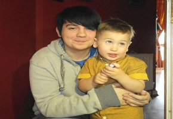

I'm currently a full time student with Colaiste Dhulaigh College of Further Education.
I study Computer Science, which includes modules such as Computer Programming, Web Authoring, Computer Architecture and Maths. I previously attended National College of Ireland, where I studied Computing in Applications and Support, with the same modules as my current course. I have experience with Java, HTML and Object Oriented Programming.

My nephew and I
I am a highly resourceful, flexible, honest and reliable individual. I take pride in excellent
time keeping and have a focused responsible attitude to my work. I have excellent
communication skills and I am able to relate comfortably to clients, members of staff,
personnel and managers alike. I am proficient working on my own initiative, as part of a
busy team of people or under direct supervision. I am able to follow procedures and I
can control all situations in a calm and professional manner.